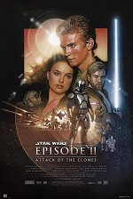

Star Wars: El ascenso de Skywalker (en inglés Star Wars: The Rise of Skywalker) es una película estadounidense de 2019 del género de la ópera espacial, dirigida por J. J. Abrams, producida por Kathleen Kennedy, Bryan Burk y Abrams y escrita por Abrams y Chris Terrio. Se trata de la novena y última entrega de la saga principal de Star Wars y su trama concluye la tercera trilogía. The Walt Disney Company y Bad Robot Productions estuvieron a cargo de su distribución.
La película recibió críticas mixtas a positivas quienes elogiaron la espectacular banda sonora de Williams, actuaciones, la dirección de Abrams, las secuencias de acción y los efectos visuales pero criticaron el guion inconsistente y los momentos oscuros aun así la película ha sido un éxito de taquilla recaudando 1,096 millones USD en contra de un presupuesto de 275 millones USD.
La película recibió 3 nominaciones a los Premios Oscar en las categorías Mejor Banda Sonora, Mejor Edición de Sonido y Mejores Efectos Visuales perdiendo frente a Joker, Ford v Ferrari y 1917 respectivamente.
Hace mucho tiempo en una galaxia muy, muy lejana [...] ¡Los muertos hablan! La galaxia ha escuchado una emisión misteriosa, una amenaza de VENGANZA en la siniestra voz del difunto EMPERADOR PALPATINE. [...] LA GENERAL LEIA ORGANA envía agentes secretos para reunir inteligencia, mientras REY, la última esperanza de los Jedi, entrena para la batalla contra la diabólica PRIMERA ORDEN.[...] Mientras tanto, el Líder Supremo KYLO REN se enfurece en busca del Emperador fantasma, decidido a destruir cualquier amenaza a su poder...
Un año después de los eventos de Los últimos Jedi, tras una transmisión proveniente del difunto Emperador Palpatine clamando venganza, el Líder Supremo Kylo Ren aparece atacando junto con algunas de sus tropas de la Primera Orden y mata a algunos de los habitantes en el planeta Mustafar, luego de terminar el asalto este llega hasta las ruinas del castillo de su abuelo Darth Vader y obtiene un dispositivo Sith Wayfinder, posteriormente este con la ayuda del dispositivo viaja hasta el mundo de Exegol en las regiones desconocidas, con el objetivo de eliminar al malvado Lord Sith, quien supone una amenaza a su poder. Allí, descubre a un Palpatine muy anciano, ciego y decrépito, quien está conectado a una maquinaria que lo mantiene vivo, la cual es monitoreada por unos alienígenas. Éste afirma que sí murió a manos de Anakin Skywalker, pero que el Lado oscuro es la vía para habilidades que muchos consideran antinaturales. También revela que creó a Snoke como un títere para controlar la Primera Orden y manipuló todo desde las sombras. Luego levanta desde las entrañas del planeta una poderosa armada secreta de Destructores Estelares Sith con la que le ofrece crear un nuevo Imperio, llamado La Orden Final. Este le pormete darle a Ren esta poderosa flota, pero a cambio este deberá encontrar a Rey y matarla, ya que ella no es quien todos creen que es realmente. Mientras tanto, la joven Rey continúa su entrenamiento Jedi con la general Leia ejerciendo de maestra, primero hace meditación llamando a los Jedis del pasado y luego recorriendo un circuito de obstáculos, incluyendo una esfera similar a la que utilizó Luke en su entrenamiento inicial. Al final Rey es distraída por visiones y por la conexión que mantiene con Kylo Ren, y corta un par de árboles, uno de los cuales aprisiona a BB-8, ella lo salva y así termina su entrenamiento.
Finn, Poe y Chewbacca recuperan información sobre el descubrimiento de Kylo Ren procedente de un espía dentro de la Primera Orden, la cual es suministrada por un aliado de la Resistencia y posteriormente guardada en la memoria de R2-D2. Son emboscados y perseguidos por los cazas estelares TIE, pero escapan haciendo varios saltos a la velocidad de la luz y regresan a la base de La Resistencia ubicada en Ajan Kloss en el Halcón Milenario el cual presentó graves daños. Poe Dameron reúne a la Resistencia para informarla de las últimas novedades. Después de enterarse de que Palpatine ha regresado de boca de Poe, Rey descubre notas sobre un artefacto Sith en los textos Jedi que dejó Luke Skywalker. Rey, Poe, Finn, Chewbacca, BB-8 y C-3PO salen hacia el planeta Passanna a buscar un contacto que Luke conocía, mientras que R2-D2 se queda con Leia.
En Passanna llegan en medio de un festival local y, luego de escapar de los Stormtroopers, son rescatados por Lando Calrissian, quien explica que él y Luke habían rastreado el artefacto hasta su última ubicación conocida en el desierto, luego lo invitan a unirse a la Resistencia pero Lando se niega inicialmente. Kylo se entera de dónde está Rey a través de su vínculo de Fuerza y viaja a Passanna con los Caballeros de Ren. Rey y los demás descubren, después de ser absorbidos por arenas movedizas y andar por túneles, los restos de Ochie, un asesino Sith, su nave (que Rey reconoce haberla visto de pequeña en Jakku) y una daga inscrita con texto Sith, que C-3PO entiende pero que su programación le prohíbe traducir, luego son sorprendidos por una serpiente alienígena gigante, la cual Rey domina y luego cura con sus poderes Jedi, lo que hace que la serpiente se vaya. Sintiendo que Kylo está cerca, Rey va a confrontarlo, enfrentandolo sola contra su nave la cual es inhabilitada por el sable de luz de Rey. La Primera Orden captura el Halcón Milenario, a Chewbacca y la daga; Rey, intentando salvar a Chewbacca y tratando de hacerle oposición a Kylo, destruye accidentalmente el transporte de la Primera Orden con un rayo de la Fuerza, creyendo que en el iba Chewie. El grupo escapa en la nave del asesino, suponiendo que Chewie murió en la explosión.
Poe sugiere que se dirijan a Kijimi para extraer el texto Sith de la memoria de C-3PO. Al llegar allí se enteran que la Primera Orden los esta buscando, ocultandose se encuentran con Zorii Bliss, una vieja amiga de Poe y el alienígena Babu Frik, quienes los ayudan a esconderse y también a resetear a C-3PO, aunque el droide en el proceso pierde toda su memoria. La traducción de la inscripción Sith proporciona coordenadas a un dispositivo Wayfinder en una de las lunas de Endor que conduciría a Exegol. Rey siente que Chewbacca está vivo y el grupo monta una misión de rescate. Mientras Kylo busca a Rey, el grupo se infiltra en su Destructor Estelar con la ayuda de Zorii, quien les da una insignia de la Primera Orden. Kylo inicia un vínculo de la Fuerza mientras Rey llega a su cámara, y le dice que no le mintió cuando sus padres la vendieron y que estos no eran nadie, pero su historia no estaba completa. Los padres de Rey decidieron ser unos don nadie para ocultarse de una amenaza mayor: Rey es la nieta de Palpatine, y éste había ordenado su muerte cuando era niña, temiendo su poder y en lo que se convertiría. Rey recupera la daga y tiene visiones del asesino usándola para matar a sus padres. El general Hux descubre al grupo, al rescatarlos de su ejecución y se revela como el espía dentro de la Primera Orden. Les permite escapar en el Halcón, afirmando que no le importa que gane la Resistencia, y que su único deseo es que pierda Kylo Ren. Luego es ejecutado por traición por el general Pryde después de dar el falso reporte del escape de los prisioneros.
El grupo sigue las coordenadas hasta Endor, donde se encuentran con Jannah, una ex stormtrooper desertora de la Primera Orden, que los lleva a los restos de la segunda Estrella de la Muerte, que yacen sobre un océano. Rey localiza el Wayfinder, pese a la insistencia de Finn de no dejarla ir, pero al tocarlo tiene una visión de sí misma como una Sith y luego tener una corta pelea. Poco después aparece Kylo Ren, luego de que éste los rastreara hasta Endor. Ren destruye el Wayfinder y se enfrenta a Rey en un duelo. Finn trata de ayudarla pero Jannah se lo impide. Leia, a punto de morir, llama a Kylo a través de la Fuerza, pero Rey lo atraviesa con su sable de luz. Sintiendo la muerte de Leia y completamente asustada, Rey sana a Kylo y toma su nave. Ella se exilia en Ahch-To, sacudida por su linaje Sith. Luego quema la nave y trata de lanzar al fuego el sable de luz de Anakin Skywalker, pero el espíritu de Luke Skywalker aparece atrapando el sable de luz y luego le menciona a Rey que esta haciendo exactamente lo mismo que él una vez intentó hacer y alienta a Rey a superar su miedo y enfrentarse a Palpatine, tal y como él hizo en su momento cuando se enfrentó a su padre Darth Vader. Luke le proporciona el sable de luz de Leia (con el cual se entreno con Luke) y levanta su antiguo X-Wing de las profundidades del océano cerca de la isla. Además, Luke le revela que tanto el mismo como Leia sabían que Rey era una Palpatine de línea sanguínea, pero que eso no les importaba, ya que ambos habían visto su verdadero espíritu. Luego de ser recapacitada y alentada por Luke en Ahch-To, Rey saca el dispositivo Sith Wayfinder que estaba en posesión de Kylo Ren en los restos del TIE que esta incinero recientemente y va a Exegol. Mientras tanto, Kylo tiene una visión de su padre Han Solo y conversan brevemente en donde Kylo le pide disculpas a su padre por todo lo que había hecho en el pasado. Una vez redimido de todo sus actos, este inmediatamente arroja su sable de luz de plasma hacia el océano y reclama su verdadera identidad como Ben Solo.
Mientras tanto, Rey llega a Exegol y transmite su ubicación a la Resistencia. Ella se enfrenta a Palpatine, quien está rodeado de los Caballeros de Ren y una multitud de leales Sith. Éste revela a Rey que siempre la quiso viva, ya que es su heredera, y le exige que lo mate como sacrificio, así su espíritu se transferirá a ella, fundiéndose ambos en una poderosa Sith y convertirse en la emperatriz del nuevo Imperio, pero Rey se niega. Ben llega para ayudar a Rey, quien mediante su vínculo le entrega el sable de luz de Anakin Skywalker, mientras ella se queda con el de Leia. Luego, Ben vence a los Caballeros de Ren y Rey vence a los guardianes de Palpatine.
La Resistencia se involucra en la batalla con la flota de Palpatine pero son ampliamente superados, hasta que llegan Lando, Chewie y el Halcón y una multitud de refuerzos provenientes de toda la Galaxia, incluyendo al antiguo piloto rebelde Wedge Antilles, quien sirve de artillero del Halcón. Palpatine descubre que Rey y Ben forman una díada en la Fuerza debido a su poderoso vínculo, y usa la Fuerza para absorber la esencia vital de ambos, rejuveneciéndose. Luego incapacita a Ben lanzandolo lejos y ataca a la flota de la Resistencia con un gran rayo de la Fuerza. Una debilitada Rey oye las voces de los Jedis del pasado Anakin Skywalker, Obi-Wan Kenobi, Yoda, Qui-Gon Jinn, Mace Windu, Ahsoka Tano, Luminara Unduli, Adi Gallia, Kanan Jarrus y Aayla Secura. Estos animan a Rey a levantarse contra Palpatine, quien la ataca con su rayo de la Fuerza. Rey desvía el rayo con el sable de luz de Anakin y el de Leia al mismo tiempo, matando definitivamente a Palpatine y destruyendo el lugar con sus seguidores Sith, pero poco después de lograrlo esta cae agotada al suelo y muere por la energía utilizada. Sin embargo Ben se recupera y la resucita usando la Fuerza y los dos se besan románticamente, sin embargo poco después Ben muere y se convierte en uno con la Fuerza, al mismo tiempo que el cuerpo de la difunta Leia. La Resistencia finalmente destruye la flota de Palpatine y regresan victoriosos a la base.
Mientras la galaxia celebra la caída de la Primera Orden, Rey visita la antigua granja de los Lars en Tatooine, donde Luke fue criado. Allí entierra los sables de los hermanos Skywalker después de haber construido el suyo, que tiene una luz dorada. Una mujer local le pregunta su nombre. Rey, tras observar los espíritus sonrientes de sus mentores Luke y Leia a la luz del atardecer de los soles gemelos, responde que es Rey Skywalker.

|

|

|

|

|

|

|

|

|
|